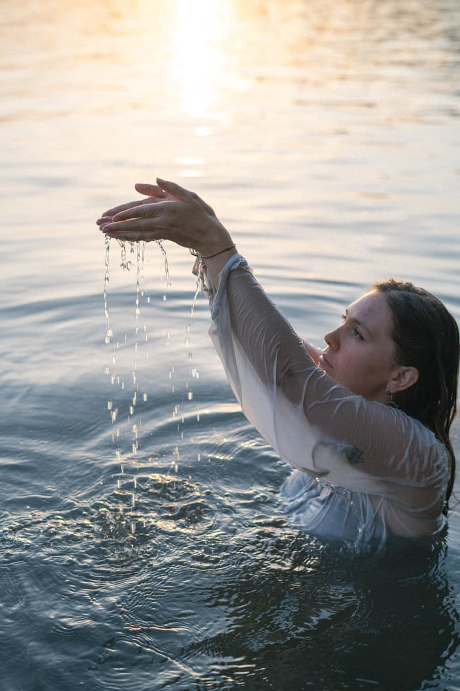

1:1 · online or in Lucerne
The Fluid Self — 1:1 Mentoring
A space for fluid dance, mindful presence and embodied transformation.

You ever wondered what's underneath the surface? Underneath your longing for expression, underneath your own way of moving? You ever wondered how it feels to embrace the fluidity in your body and in your rhythm of life?
I invite you to go on a journey within.
Exploring layers you meet every day but were never truly able to touch. A space of slowing down — to listen to your body, your breath and what wants to move through you.
Expression takes courage and patience. That's why we work with soft, intuitive methods, tailored to you and your body. The pressure to perform is invited to leave. Your dance becomes softer, rounder, more authentic. And slowly, a deep trust in your inner flow begins to unfold.
You will grow braver in being seen, in your dance, and in your life.
Unfold your inner flow
Feel empowered in your authentic body
Surrender to the softness of freedom — beyond achievement
What awaits you
More flow, more ease, more you
- Personalized 1:1 sessions — online or in Lucerne
- Deepening your body awareness, emotional presence, technique and freestyle
- ZenThai Shiatsu bodywork session (in person only)
- Personalized movement rituals to support you between sessions
- Practice sheets (PDFs) with guidance and reflections
- Curated music playlists to help you drop in
- Online support — for your questions and thoughts
- A community devoted to the waters within
For everyone who wants to rediscover themselves in dance and longs to feel strong in their softness. Perfect if you are seeking more lightness, authenticity and self-confidence.
„Water does not resist. Water flows. When you plunge your hand into it, all you feel is a caress. Water is not a solid wall, it will not stop you. But water always goes where it wants to go, and nothing in the end can stand against it. Water is patient. Dripping water wears away a stone. Remember you are half water. If you can't go through an obstacle, go around it. Water does.“ Margaret Atwood
Voices from the practice
What practitioners feel
„I was able to learn so much. My expression has opened deeply, and I feel much more connected to my body, to myself. For me, this experience went far beyond dancing. Lucy has an incredibly empathetic and beautiful way of holding and guiding space.“
„This journey has once again reminded me how deep my passion for dance truly is, and how much I want to nurture and expand my practice. I'm also taking with me the knowing that there are always spaces where connection can be found.“
„Completely out of comfort — I dived into The Fluid Self Dance Mentoring for three months. Three months of depth, touch, exploring, expanding, integrating and becoming myself. Step by step. […] That was just the beginning.“
Embark on the journey
Book your free discovery call now to dive into your sweet unfolding.